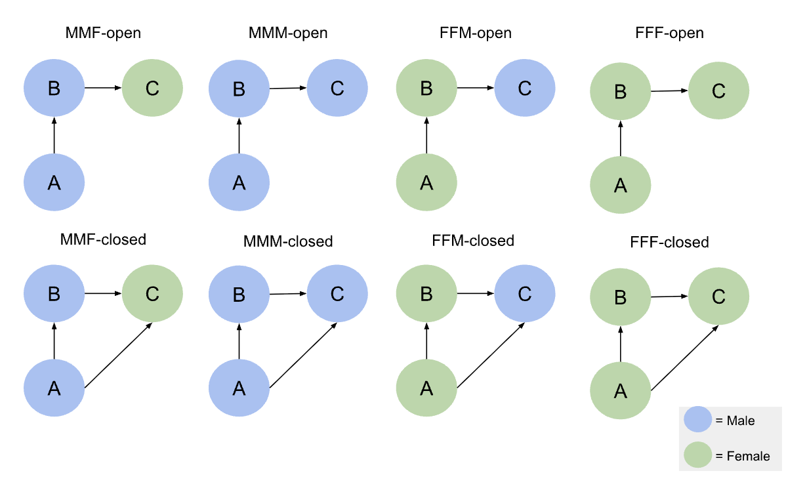

Journal 1
Mylène Husson
Last compiled on October, 2025
————————————————————————
1 Data and Methods
1.1 Data
To test the hypotheses, I use social network data on N researchers from the Sociology and Political Science departments across N Dutch universities. These data were collected in 2022 and 2024 as part of a larger project mapping collaborations among Dutch university scholars in these disciplines.
The data collection proceeded in two main steps. First, all staff members of Sociology and Political Science departments at Dutch universities were identified, and their names, affiliations, academic positions, and Google Scholar IDs were recorded. Second, publication data were retrieved from OpenAlex, a nonprofit open-science database (Priem, Piwowar, and Orr 2022). It is important to note that the collection years (2022 and 2024) do not define the analytical waves. Researchers can determine the temporal boundaries of the waves themselves. In this study, I focus on two four-year periods: 2015–2018 (Wave 1) and 2019–2023 (Wave 2). Collaboration networks were constructed by identifying co-authorships within each wave. These co-authorships can be represented as either undirected or directed networks. In the case of a directed network, directionality can be defined from the first-named author to others or from the last-named author to others. I adopt the latter approach, as it reflects academic hierarchies in which senior scholars—typically listed last—are more likely to initiate collaborations.
After constructing the co-authorship networks, the overall structure of the data can be described as a complete, or “socionet,” network, following the framework outlined by Jochem Tolsma in SNA for Social Scientists (Tolsma and Hofstra 2022). In this framework, such networks are defined by clearly specified boundaries and complete information on all actors and their relationships within those boundaries. In the present case, the network boundary is defined by all researchers affiliated with Sociology and Politicology departments at Dutch universities. The dataset includes all individuals within this defined academic context and all known collaborations among them. Because both the population of actors and their intra-boundary ties are fully captured, the data constitute a complete, or socionet, network in Tolsma’s terms.
Besides collaboration ties, the data also includes node-level attributes. These encompass time-varying characteristics, such as each researcher’s position and university affiliation, and time-constant characteristics, such as name and discipline.
1.1.1 Covariate Gender
In this study, I manually included gender as a (usually) time-constant characteristic. Each researcher’s gender was inferred from their first name using the Nederlandse Voornamenbank (NVB) of the Meertens Institute. First, I extracted the first name from each researcher’s full name and applied a custom R function I developed. This function automatically queried the NVB database, retrieved the corresponding gender frequency table, and assigned the researcher as male or female based on the most common association. If a name was not found in the NVB database or if the name field was incomplete or incorrectly formatted, the function returned NA. As a result, 22 researchers have missing gender values in the final demographic dataset.
1.1.2 Control covariates
To account for other factors that may influence the formation or closure of triads, I include controls for university affiliation, discipline, and position. These variables are already available in the dataset.
1.2 Methods
1.2.1 Descriptive
For the descriptive research questions I will first perform a triad census to see which triad configurations appear in this network, with a focus to the triad configurations I am most interested in namely A -> B -> C (021C) and the closed one in which A sends a tie to C namely A -> B - > C <- A (030T). Second, I will analyze how frequently these specific triads occur in the configurations shown below.

Based on these configurations, I can calculate the frequency of different gender compositions within the triads. By comparing these observed frequencies to the expected frequencies given the overall proportion of men and women in the network, I can assess whether certain gendered open or closed triads occur more or less often than expected by chance.
1.2.2 Explanatory
The explanatory hypotheses will be addressed using Stochastic Actor-Oriented Models (SAOMs) with RSiena (Ripley et al. (2011)). SAOMs model network evolution over time by simulating probabilistic changes in ties based on specified network statistics, which function as independent variables. RSiena distinguishes between structural effects (network-level tendencies, e.g., reciprocity, popularity, or triadic closure) and covariate effects (node characteristics, e.g., gender, prestige). To test the hypotheses, I will focus on two RSiena statistics: “jumpXTransTrip” and “sameXTransTrip”, both interacting with gender.
“jumpXTransTrip” captures the tendency of actors to close a triad by forming a tie to a node of a different attribute, reflecting cross-gender closure or bridging tendencies. In other words, if a focal actor i is connected to h, and h is connected to j, then jumpXTransTrip increases the probability that i will form or maintain a tie to j when i and h share the same gender and j has a different gender.
The corresponding statistic captures the tendency for an actor i to form or maintain a tie to another actor j when a third actor h serves as a connecting intermediary. Specifically, for all potential alters j (who are not h), the statistic examines whether there is an existing tie from i to j, a tie from i to h, and a tie from h to j (if the triad is already closed). It then restricts attention to cases where actor i and intermediary h share the same gender, while j differs in gender.
In the actor-oriented framework, this statistic contributes to the model’s evaluation function by increasing (or decreasing) the probability that actor i will make a micro-step to create or maintain a tie to j, depending on the estimated parameter. A positive coefficient for this effect means that, holding other effects constant, actor i is more likely to form or keep a tie to an out-group member j (of a different gender) when j is connected through an intermediary h who shares i’s gender. In other words, the statistic operationalizes a mechanism of indirect or mediated cross-gender closure: it measures how exposure to an out-group member through a same-gender collaborator affects tie formation dynamics.

In contrast, the “homXTransTrip” statistic measures the tendency of actors to form closed triads with others who share the same attribute, in this case, gender, capturing homophilic closure.
The corresponding formula examines, for all alter j’s, whether there is a tie from i to j, a tie from i to h and a tie from h to j, and then restricts attention to cases where node i, j and node h are of the same gender. Again, this statistic contributes to the model’s evaluation function by increasing (or decreasing) the probability that actor i will make a micro-step to create or maintain a tie to j, depending on the estimated parameter.

By interacting these statistics with gender, I can test whether A -> B -> C triads are more likely to close based on the gender of C relative to A and B. This allows me to assess whether triadic closure processes in the collaboration network tend to reinforce gender similarity or facilitate cross-gender connections.
ADAPT:::: In Model 1, I will introduce the jumpXTransTrip statistic interacted with gender to conduct an initial exploration of the first hypothesis. Model 2 will additionally include sameXTransTrip to examine the second hypothesis. Next, I will assess the Goodness of Fit to determine whether the variables in the model adequately capture the observed triadic closure patterns represented by the TransTrip statistic. Based on these results, and guided by the theoretical expectation that actors may form closed triads regardless of gender, I will include a control for generic triadic closure in Model 3. In Model 4, I will further add control covariates for same university and same department (and possibly position). to account for other factors that may influence tie formation. Finally, the Goodness of Fit of the full model (Model 5) will be evaluated and reported.